Pour avoir accès aux paramètres de configuration de Grisbi, cliquez sur le menu Edition - Préférences. La fenêtre de configuration s’ouvre, et vous pouvez en changer la taille et la position.
Cette fenêtre se compose de deux panneaux verticaux : le panneau des onglets à gauche, et le panneau des réglages à droite.
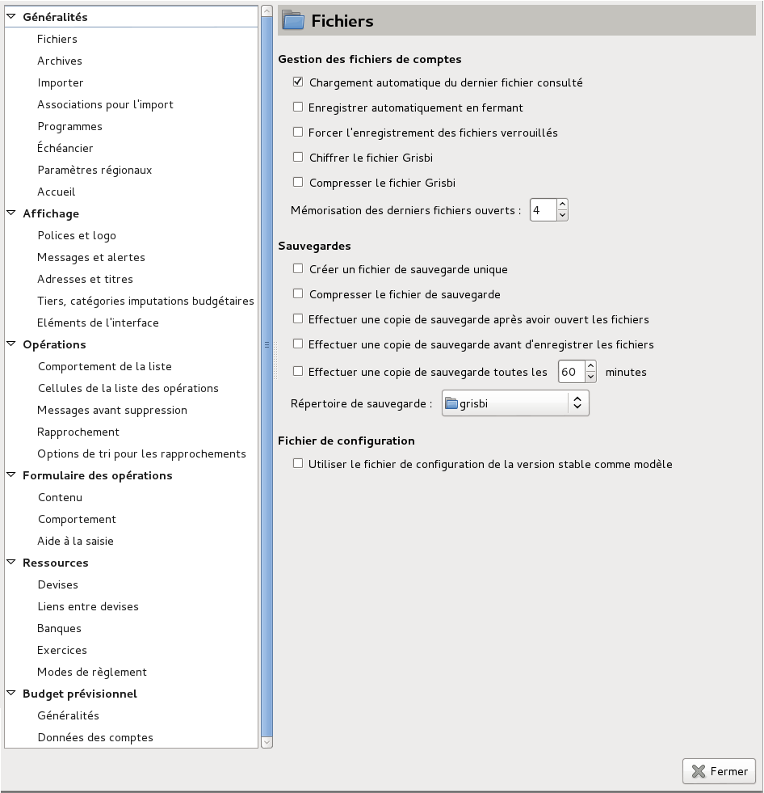
Figure 22.1: Fenêtre de configuration
Il y a vingt-sept onglets qui sont regroupés en six sections :
La fenêtre de configuration s’ouvre en affichant l’onglet Fichiers dans le panneau des réglages à droite.
Vous pouvez sélectionner un autre onglet en cliquant sur son nom, ou en naviguant dans le panneau des onglets avec les touches du clavier <Flèche Haut>, <Flèche Bas>, <Page Haut>, <Page Bas>.
Vous pouvez naviguer entre le panneau des onglets et les différentes options du panneau des réglages avec les touches <Tabulation>, <Flèche Haut>, <Flèche Bas>, <Flèche Gauche> et <Flèche Droit>.
Cet onglet définit la façon dont Grisbi utilise vos fichiers de comptes.
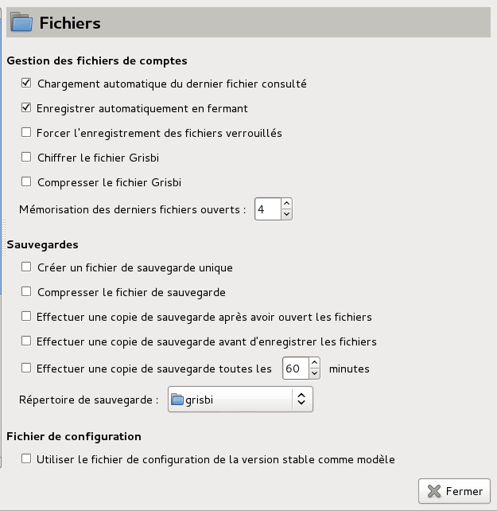
Figure 22.2: Gestion des fichiers de comptes et des sauvegardes
Vous pouvez y définir :
Attention : il n’existe aucune méthode pour récupérer un fichier chiffré dont on a perdu le mot de passe.
Attention : pour une raison inconnue, l’utilisation de cette fonction de Grisbi sous Windows peut rendre le fichier de comptes totalement inutilisable ; il est donc recommandé de faire des sauvegardes très souvent, ou mieux encore, de ne pas l’utiliser : son utilisation est à vos risques et périls ;
Note : il est conseillé de sélectionner l’option Enregistrer automatiquement en fermant : les modifications sont sauvegardées à la fermeture de Grisbi sans rien demander à l’utilisateur.
Vous pouvez y définir :
Note : il est conseillé de sélectionner l’option Effectuer une copie de sauvegarde avant d’enregistrer les fichiers : Grisbi sauvegarde l’ancien fichier avant de faire une sauvegarde des dernières modifications.
Attention : d’une manière générale, il est déconseillé d’avoir des accents ou des espaces dans les noms des répertoires et fichiers utilisés par Grisbi. Si c’est le cas, renommez-les maintenant. Par exemple, les espaces peuvent être remplacées par des tirets bas (_).
Vous pouvez choisir ici d’Utiliser le fichier de configuration de la version stable comme modèle. Cela peut être utile si vous voulez essayer une version en cours de développement en conservant tous vos réglages de la version stable.
Cet onglet sert à gérer les archives existantes et l’automatisation de l’archivage.
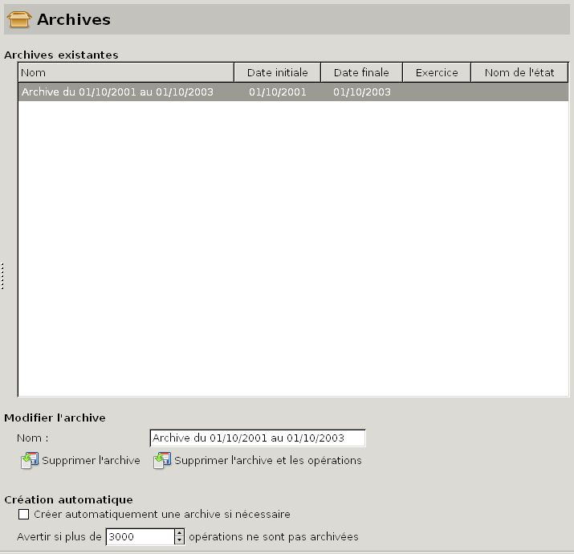
Figure 22.3: Gestion des archives
Un tableau affiche la liste des archives faites précédemment, avec les informations relatives au mode de sélection des opérations utilisé pour la création de l’archive :
Si vous sélectionnez une ligne d’archive par un clic dans le tableau, son nom apparaît dans le champ libellé Nom, et les deux boutons de suppression d’archive Supprimer l’archive et Supprimer l’archive et les opérations deviennent actifs ; vous pouvez alors :
Attention : si vous choisissez cette dernière fonction, il n’y aura pas d’autre avertissement, et l’archive sera supprimée IMMÉDIATEMENT ainsi que toutes ses opérations. Cette suppression est irréversible !
Lorsqu’un certain nombre d’opérations enregistrées est atteint, Grisbi peut d’une part afficher un avertissement que cette quantité d’opérations n’a pas été encore archivée, d’autre part lancer automatiquement la création d’une archive.
En cliquant sur la case libellée Créer automatiquement une archive si nécessaire, vous validez cette fonction d’archivage automatique.
Avec le libellé Avertir si plus de … opérations ne sont pas archivées, vous pouvez définir ce nombre d’opérations. La valeur par défaut est 3000.
Cet onglet sert à configurer certains paramètres d’importation de données.
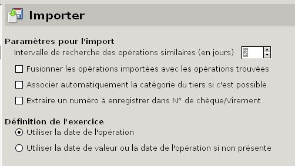
Figure 22.4: Paramètres d’importation
Quand vous importez un compte, Grisbi vérifie, pour chaque opération de ce compte, si elle existe déjà dans votre fichier de comptes : si l’opération importée comporte un identifiant bancaire (ce qui est généralement le cas), il commence par chercher une opération qui a le même identifiant. S’il ne trouve pas, il va chercher une opération du même montant et à une date proche.
Le champ de libellé Intervalle de recherche des opérations similaires permet de définir combien de jours avant et après la date de l’opération importée Grisbi va faire cette recherche. Ainsi, une opération datée du 10 du mois sera recherchée 5 jours avant et après si le réglage est de 5 (sa valeur par défaut est 2).
Vous pouvez faire les choix suivants :
Vous pouvez définir quelle type de date sera utilisée pour l’attribution de l’exercice à chaque opération importée, en choisissant entre les boutons :
Lorsque vous importez un fichier, vous pouvez établir une association entre une chaîne de caractères de ce fichier et un tiers. Par exemple, tous les libellés QIF contenant «loyer » peuvent être associés à un tiers qui peut, par exemple, représenter votre propriétaire. Cela permet de définir automatiquement des tiers à partir d’informations avec lesquelles vous savez qu’elles ont un rapport.
La section Associations pour l’import affiche le tableau des associations tiers-chaîne de caractères, et deux boutons Ajouter et Enlever. La section Détails des associations affiche un champ de saisie et une liste déroulante pour le Nom du tiers, et un champ de saisie pour la Chaîne recherchée : cela permet d’afficher les paramètres de l’association pour l’import sélectionnée dans le tableau, ou de créer ou modifier une association.
Pour ajouter une association, procédez comme suit :
Pour modifier une association, procédez comme suit :
Note : ces triangles peuvent être remplacés, en fonction du thème de l’environnement de bureau ou du gestionnaire de fenêtres que vous utilisez, par d’autres caractères tels que +, -, >, <, etc.
Pour supprimer une association, procédez comme suit :
Cet onglet permet de définir le programme qui sera lancé par les différents choix du menu Aide. Le champ navigateur Web permet de définir ce programme, qui affichera directement les contenus au format HTML dont Grisbi connaît l’adresse URL , comme le Manuel de l’Utilisateur en ligne.
Dans le champ Navigateur Web, la commande xdg-open, reconnue par tous les bons systèmes d’exploitation, lance votre navigateur par défaut. Vous pouvez aussi saisir la commande qui lance un autre navigateur, par exemple firefox ou bien, si vous voulez un affichage ultra-rapide, un navigateur ultra-léger comme Dillo ou Midori (commande dillo ou midori).
Note : dans cette commande, vous devrez peut-être indiquer aussi le chemin d’accès complet à la commande.
Note : cela peut fonctionner de saisir une commande pour lancer l’affichage du manuel en pdf, par ex. evince chemin/grisbi-manuel-img-xxx.pdf avec son chemin ; il se peut que cela affiche aussi une erreur peu importante, mais si vous préférez ce format …
L’échéancier peut vous signifier une alerte d’opération planifiée à l’approche d’une échéance, par un message qui s’affiche dans la page d’accueil. Vous pouvez choisir entre les boutons :
Vous pouvez aussi y définir avec l’incrémenteur le Nombre de jours avant l’alerte ou l’exécution des opérations.
Grisbi vous laisse le choix dans le format de la date. Vous pouvez choisir son format entre les boutons :
Vous pouvez choisir dans les deux listes déroulantes :
Il s’agit de la configuration de trois aspects de la page d’accueil.
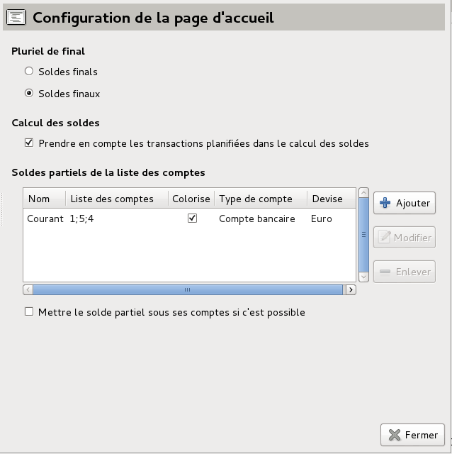
Figure 22.5: Configuration de la page d’accueil
Ce pluriel du mot «final » apparaît notamment dans la page d’accueil. Vous pouvez choisir le pluriel de «Solde final », entre Soldes finals (choix par défaut) et Soldes finaux. En effet, l’emploi de l’un ou l’autre est possible, c’est donc à votre convenance.
Vous pouvez aussi Prendre en compte les transactions planifiées dans le calcul des soldes en cochant la case correspondante : c’est le choix par défaut.
La page d’accueil affiche le solde de chaque compte créé dans Grisbi, ainsi que le solde final de tous les comptes. Vous pouvez aussi lui faire afficher les soldes de plusieurs comptes, groupés par vous-mêmes en groupes de comptes. Ces soldes partiels seront affichés en-dessous des soldes des comptes, et leur ordre peut être ajusté à votre convenance, ainsi que leur couleur.
Le tableau Soldes partiels de la liste des comptes affiche les groupes de comptes et leurs paramètres : Nom, Liste des comptes, Colorise, Type de compte, Devise.
Vous pouvez ajuster l’ordre d’affichage des soldes partiels dans la page d’accueil de plusieurs manières :
Pour ajouter un groupe de comptes dans la liste, procédez comme suit :
Pour modifier un groupe de comptes dans la liste, procédez comme suit :
Pour supprimer un groupe de comptes dans la liste, procédez comme suit :
Vous pouvez modifier le logo de Grisbi, la police de caractères utilisés et certaines couleurs.
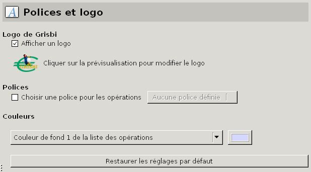
Figure 22.6: Logo de Grisbi, polices de caractères et couleurs
Vous pouvez afficher ou non un logo dans la page d’accueil de Grisbi en (dé)cochant le bouton Afficher un logo. Le logo par défaut est le même que celui qui est affiché en miniature devant le libellé Cliquez sur la prévisualisation pour modifier le logo. Vous pouvez le changer à votre convenance.
Pour changer le logo, procédez comme suit :
Cette fonction est surtout intéressante pour les trésoriers d’associations (ou d’autres organisations) qui pourront ainsi imprimer des états avec leur logo au lieu de celui de Grisbi.
Note : le logo de Grisbi existe en plusieurs formats, dont PNG et SVG.
Pour changer la police de caractères utilisée dans Grisbi pour les opérations, procédez comme suit :
Toutes les couleurs accessibles dans la liste déroulante commençant par Couleur de fond 1 de la liste des opérations sont modifiables ; pour les modifier, procédez comme suit :
La Couleur pour l’opération qui donne le solde à aujourd’hui sert à distinguer le solde du compte quand on a choisi l’option Exécuter les opérations planifiées du mois (voir la section 22.1.6, Échéancier).
Vous pouvez revenir aux réglages de couleur d’origine en cliquant sur le bouton Restaurer les réglages par défaut.
Cet onglet permet d’autoriser ou non l’affichage des messages et des alertes que vous renvoie Grisbi.
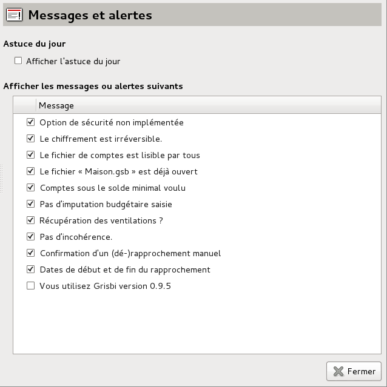
Figure 22.7: Messages et alertes
Avec la case à cocher Afficher l’astuce du jour, vous autorisez ou non l’affichage de la fenêtre de l’astuce du jour dans la page d’accueil, à chaque démarrage de Grisbi (par défaut, elle ne sera pas affichée). De toutes manières, cette fenêtre peut aussi être affichée à tout moment, en sélectionnant le menu Aide - Astuce du jour.
En (dé)cochant la case correspondante, vous pouvez autoriser ou non l’affichage des messages d’alerte suivants :
Par défaut, l’affichage de tous ces messages est validé.
Cet onglet permet de saisir un titre et des adresses.
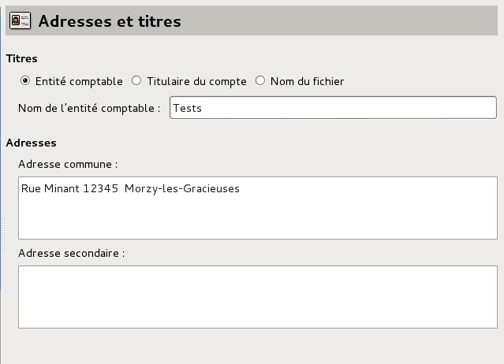
Figure 22.8: Adresses et titres
Grisbi affiche en haut de sa page d’accueil, à droite de l’icône Grisbi, un titre qui permet d’identifier sur quel document vous travaillez actuellement, sous la forme «libellé - Grisbi». Vous pouvez définir ici ce libellé, parmi les trois suivants :
Vous pouvez indiquer ici deux adresses différentes pour le titulaire, dans les deux champs juste en-dessous.
Cet onglet permet de définir certains paramètres d’affichage de ces trois onglets.
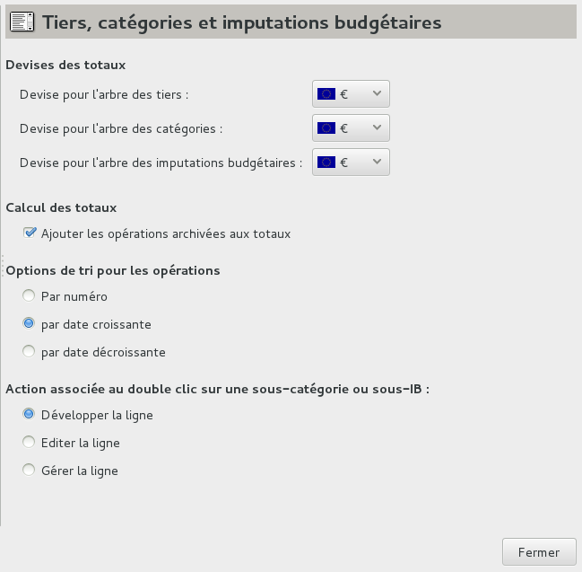
Figure 22.9: Tiers, catégories et imputations budgétaires
Vous pouvez ici définir individuellement la devise utilisée pour les totaux des différents onglets Tiers, Catégories et Imputations budgétaires. Pour chacun, sélectionnez la devise dans la liste déroulante correspondante. Le choix ne peut être fait que parmi les devises que connaît votre fichier de comptes (voir la section 22.5.1, Devises).
La case Ajouter les opérations archivées aux totaux, cochée par défaut, permet de tenir ou non compte des opérations archivées dans le calcul des totaux, pour les onglets Tiers, Catégories et Imputations budgétaires. Lorsque cette option est cochée, les totaux dans ces onglets comptabilisent les opérations archivées. Dans le cas contraire les totaux ne comptabilisent que les opérations non archivées.
Attention : ne décochez cette case qu’en connaissance de cause, car ces totaux risqueraient alors de ne pas refléter la réalité !
Vous pouvez choisir l’ordre d’affichage des opérations, parmi deux critères de tri :
Vous pouvez définir l’action qu’exécutera le double-clic de la souris sur une sous-catégorie ou une sous-imputation budgétaire, parmi les choix suivants :
Ces trois éléments de la fenêtre de Grisbi peuvent être configurés. Pour les identifier correctement, voir le chapitre 4, Accueil .

Figure 22.10: Éléments de l’interface
La barre d’information peut être masquée ou affichée en (dé)cochant la case correspondante Afficher la barre d’information.
Vous pouvez choisir la possibilité du changement d’onglet avec la molette de la souris dans le panneau de navigation, en cochant la case Ajouter le défilement avec la souris dans le panneau de navigation : c’est le choix par défaut.
Vous pouvez choisir le mode d’affichage des boutons de la barre d’outils, avec :
Cet onglet permet de configurer la liste des opérations.
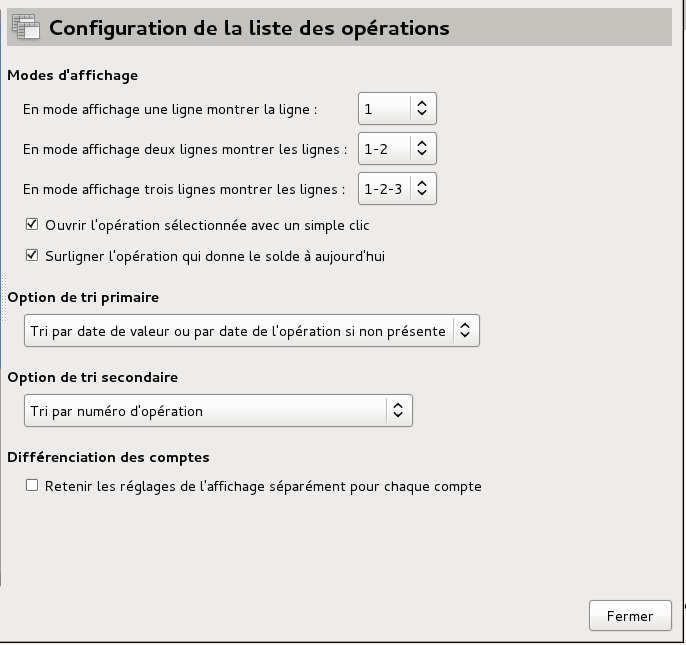
Figure 22.11: Configuration de la liste des opérations
Vous pouvez choisir le mode d’affichage de la liste, c’est à dire le nombre de lignes qui sont affichées pour chaque opération : sélectionnez, dans la liste déroulante, le mode d’affichage (Vue simple, Mode «deux lignes » ou Mode «trois lignes ») dans la liste des opérations des comptes (voir la section 8.2.1, Description). Le mode Vue complète ne peut être configuré, car il affiche évidemment toutes les lignes.
Note : le contenu de chaque ligne choisie dépend de la configuration de l’affichage des champs : voir la section 22.3.2, Cellules de la liste des opérations.
Vous pouvez choisir les fonctions suivantes, à votre convenance :
Le tri primaire sert à déterminer la date pour laquelle le solde est calculé après chaque opération. Vous pouvez choisir l’un de ces deux critères pour ce tri primaire :
Note : le choix du tri primaire fait ici modifie nécessairement la chronologie des opérations, donc le solde calculé après chaque ligne d’opération.
Note : pour trier les opérations par date d’opération ou par date de valeur, il faut qu’une colonne de la liste des opérations affiche cette date (voir la section 8.2.2, Champs d’information et de saisie), et que vous ayez sélectionné Date d’opération ou Date de valeur dans le menu contextuel par un clic-droit dans le libellé de la colonne (voir la section 8.2.4, Tris).
Vous pouvez choisir l’un de ces quatre critères pour le tri secondaire :
La différenciation des comptes est la possibilité de régler leur affichage indépendamment : vous pouvez choisir de Retenir les réglages de l’affichage séparément pour chaque compte en cochant la case correspondante.
Vous pouvez définir le nombre et l’emplacement exact des champs des opérations dans la liste des opérations, grâce aux deux tableaux décrits ci-dessous.
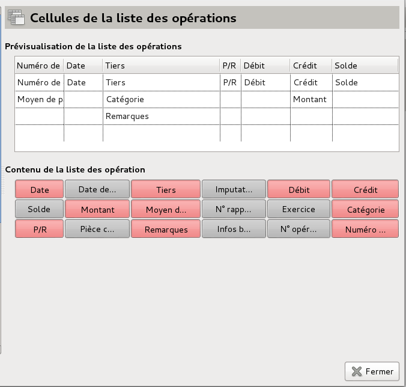
Figure 22.12: Cellules de la liste des opérations
Note : la disposition de l’affichage des champs des opérations dans la liste des opérations des comptes est totalement indépendante de celle de l’affichage des champs dans le formulaire de saisie, qui est elle-même décrite dans la section 22.4.1, Contenu.
Le tableau de prévisualisation présente un aperçu des champs d’une opération, dont le contenu est affiché dans la liste des opérations de l’onglet Opérations de chaque compte.
Ce tableau comprend quatre lignes et sept colonnes, qui définissent 28 cellules, qui peuvent donc afficher au maximum 28 champs. Vous pouvez modifier la largeur des colonnes en cliquant, dans la ligne des libellés des colonnes, sur le séparateur entre deux d’entre-elles (sans relâcher) et en le déplaçant avec la souris.
Note : le libellé de chaque colonne de ce tableau est celui du champ de la première ligne de cette colonne, quand il est rempli.
Un même champ ne peut être présent que dans une seule cellule de la liste des opérations.
Vous pouvez déplacer un champ d’une cellule à une autre cellule en cliquant (sans relâcher) sur son nom et en le déplaçant dans l’autre cellule. Si celle-ci contient déjà un champ, celui-ci disparaît et doit être éventuellement remis en place dans une autre cellule.
Le tableau montre tous les champs affichables dans le tableau de prévisualisation, donc dans la liste des opérations. Il sert à choisir les champs affichés dans la prévisualisation. Chaque cellule de ce tableau peut avoir deux couleurs :
Pour ajouter un champ dans la prévisualisation, cliquez sur son nom (sur fond gris foncé) dans le tableau de contenu : la couleur de sa cellule passe au rouge, tandis que le nom de ce champ apparaît dans les dernières lignes du tableau de prévisualisation. Déplacez ensuite ce champ dans la cellule qui vous convient.
Pour enlever un champ de la prévisualisation, cliquez sur son nom (sur fond rouge) dans le tableau de contenu : la couleur de sa cellule passe au gris foncé, tandis que ce champ disparaît de la prévisualisation.
Pour modifier un champ de la prévisualisation, déplacez-le dans une autre cellule et ajoutez un autre champ à la place.
Note : il est possible d’enlever tous les champs du tableau de prévisualisation, et dans ce cas la liste des opérations ne contiendra l’affichage d’aucune opération .
Grisbi vous offre une très grande souplesse pour l’affichage des champs des opérations dans la liste des opérations des comptes : d’une part, vous pouvez positionner n’importe quel champ d’information sur n’importe quelle cellule de n’importe laquelle des quatre lignes du tableau de prévisualisation ; d’autre part, le menu Mode d’affichage de la liste d’opérations permet quatre possibilités d’affichage (Vue simple, Mode «deux lignes », Mode «trois lignes » et Vue complète), qui peuvent être configurés dans le paragraphe 22.3.1, Modes d’affichage. Vous pouvez donc, suivant le Mode d’affichage sélectionné, afficher quatre jeux de lignes que vous voulez, par exemple :
En (dé)cochant la case correspondante, vous pouvez autoriser ou non l’affichage des messages suivants :
Par défaut, l’affichage de tous ces messages est validé.
Cet onglet permet de gérer les rapprochements effectués antérieurement.
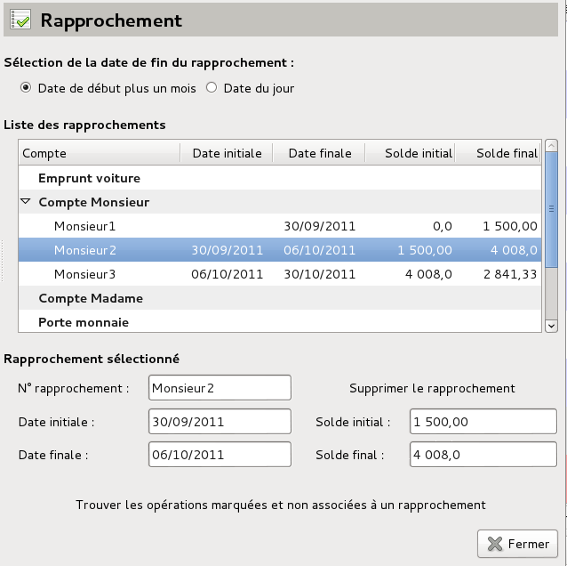
Figure 22.13: Gestion des rapprochements antérieurs
Vous pouvez définir la date de fin de rapprochement parmi ces deux dates :
Le tableau liste tous les rapprochements déjà effectués dans tous les comptes de votre fichier de comptes.
Pour afficher tous les rapprochements d’un ou plusieurs comptes, cliquez sur le petit triangle à gauche de leurs noms. Vous pouvez alors sélectionner un des rapprochements par un clic sur sa ligne, son numéro s’affiche dans la colonne Compte, et ses dates (initiale et finale) et soldes (initial et final) s’affichent dans leurs colonnes respectives.
Note : ces triangles peuvent être remplacés, en fonction du thème de l’environnement de bureau ou du gestionnaire de fenêtres que vous utilisez, par d’autres caractères tels que +, -, >, <, etc.
Quand vous sélectionnez un rapprochement dans le tableau, le détail de ses caractéristiques apparaît dans les différents champs, que vous pouvez modifier en cas de besoin.
Le bouton Supprimer le rapprochement permet de supprimer le rapprochement sélectionné ; dans ce cas, toutes les opérations rapprochées liées à ce rapprochement perdront leur statut d’opérations rapprochées, retrouveront le statut d’opérations pointées et seront donc marquées «P ».
Attention : la suppression d’un rapprochement, la modification ou la suppression de certaines caractéristiques d’un rapprochement, peuvent avoir des conséquences importantes sur le compte concerné, par exemple la cohérence entre les dates (initiale et finale), ou entre les soldes (initial et final) de deux rapprochements consécutifs, pouvant aller jusqu’à rendre votre fichier de comptes inutilisable. Il est donc fortement conseillé de faire une copie de sauvegarde de votre fichier de comptes auparavant.
Le bouton Trouver les opérations marquées et non associées à un rapprochement permet d’aider à rétablir une continuité des rapprochements et de réparer certaines erreurs. Les opérations marquées correspondent à des opérations qui peuvent avoir une lettre «P », «R » ou «T » dans la colonne P/R. Si vous cliquez sur ce bouton, un assistant s’ouvre, qui permet de :
Vous pouvez configurer ici l’ordre d’affichage de la liste des opérations lors d’un rapprochement des opérations d’un compte (voir le chapitre 9, Rapprochement bancaire). Cet ordre peut être configuré par un tri selon les modes de règlement. Cela peut être utile si votre relevé bancaire présente un ordre particulier selon ces modes de règlement, et si vous voulez faire correspondre l’affichage de Grisbi avec ce relevé.
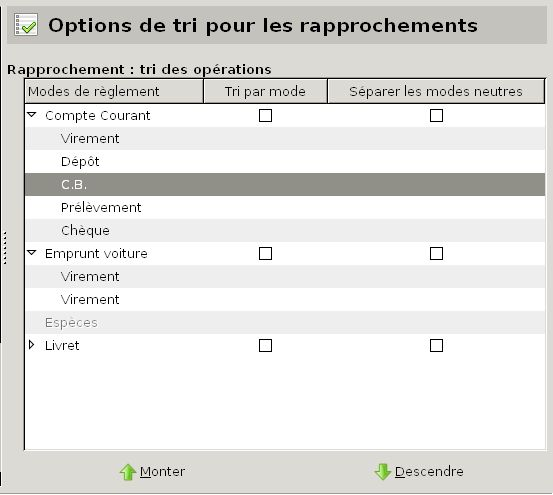
Figure 22.14: Options de tri pour les rapprochements
Un tableau affiche la liste des comptes de votre fichier de comptes. Pour afficher tous les modes de règlement d’un ou plusieurs comptes, cliquez sur le petit triangle à gauche de leur nom.
Note : ces triangles peuvent être remplacés, en fonction du thème de l’environnement de bureau ou du gestionnaire de fenêtres que vous utilisez, par d’autres caractères tels que +, -, >, <, etc.
Vous pouvez choisir, individuellement pour chaque compte, que les opérations de votre compte se présentent triées par mode de règlement.
Vous pouvez aussi, individuellement pour chaque compte, y Séparer les modes neutres : un mode neutre est un mode de règlement qui peut être indifféremment un débit ou un crédit, comme par exemple un virement, au contraire du mode Prélèvement qui est toujours un débit, ou du mode Dépôt qui est toujours un crédit.
Pour ajuster un ordre particulier pour un compte, procédez comme suit :
Vous pouvez définir le nombre et l’emplacement exact des champs constituant le formulaire de saisie des opérations, grâce aux deux tableaux décrits ci-dessous.
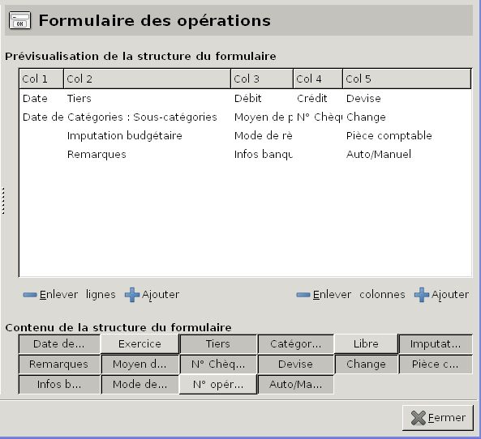
Figure 22.15: Formulaire des opérations
Note : la disposition de l’affichage des champs dans le formulaire de saisie est totalement indépendante de celle de l’affichage des champs dans la liste des opérations des comptes, qui est elle-même décrite dans la section 22.3.2, Cellules de la liste des opérations.
Ce tableau de prévisualisation présente un aperçu des champs du formulaire de saisie des opérations tels qu’ils seront affichés dans l’onglet Opérations d’un compte.
Le formulaire peut avoir de 4 à 6 colonnes et de 1 à 4 lignes. Vous pouvez en diminuer ou augmenter le nombre grâce aux boutons Enlever et Ajouter à côté des libellés lignes et colonnes sous ce tableau à gauche et à droite. Vous pouvez modifier la largeur des colonnes en cliquant sur le séparateur entre deux d’entre-elles (sans relâcher) et en le déplaçant avec la souris.
Note : bien que les colonnes de ce tableau soient nommées ici «Col 1 » à «Col 6 », le libellé d’une colonne dans le formulaire de saisie est toujours le libellé du champ situé sur la première ligne de ce tableau de prévisualisation.
Une cellule est définie par l’intersection d’une ligne et d’une colonne. Un même champ ne peut être présent que dans une seule cellule du formulaire.
Vous pouvez déplacer un champ d’une cellule à une autre cellule en cliquant (sans relâcher) sur son nom et en le déplaçant dans l’autre cellule. Si celle-ci n’est pas vide, les deux champs sont intervertis.
Ce tableau montre tous les champs affichables dans le tableau de prévisualisation. Il sert à définir les champs affichés dans la prévisualisation. Chaque cellule de ce tableau peut avoir deux couleurs :
Pour ajouter un champ dans la prévisualisation, cliquez sur son nom dans ce tableau de contenu : la couleur de sa cellule passe au gris foncé, tandis que le nom de ce champ apparaît dans la prévisualisation. La première ligne se complète d’abord si elle a des cellules vides, sinon la suivante fait de même, etc.
Pour enlever un champ de la prévisualisation, cliquez sur son nom dans ce tableau de contenu : la couleur de sa cellule passe au gris clair, tandis que ce champ disparaît de la prévisualisation.
Note : il est impossible d’enlever les champs Date, Débit et Crédit, car ce sont les informations minimales indispensables à une opération.
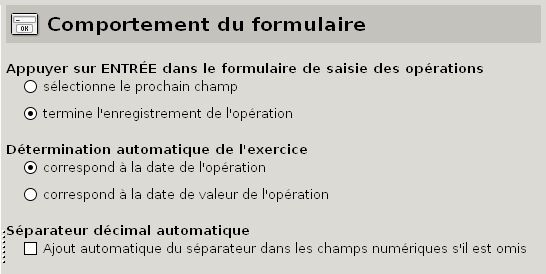
Figure 22.16: Comportement du formulaire des opérations
Vous pouvez définir les comportements suivants du formulaire :
En (dé)cochant la case correspondante, vous pouvez autoriser ou non les fonctions suivantes :
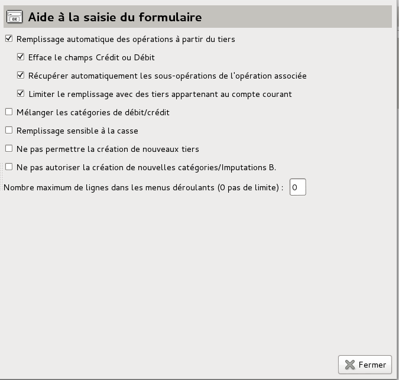
Figure 22.17: Aide à la saisie du formulaire
Vous pouvez aussi définir le Nombre maximum de lignes dans les menus déroulants (0 pour aucune limite), en saisissant un nombre dans le champ adjacent ; la valeur par défaut est 0, et il vaut mieux garder cette valeur, car c’est le fonctionnement le plus pratique.
Cet onglet affiche le tableau des devises connues par votre fichier de comptes, ainsi que les propriétés de la devise quand elle est sélectionnée.
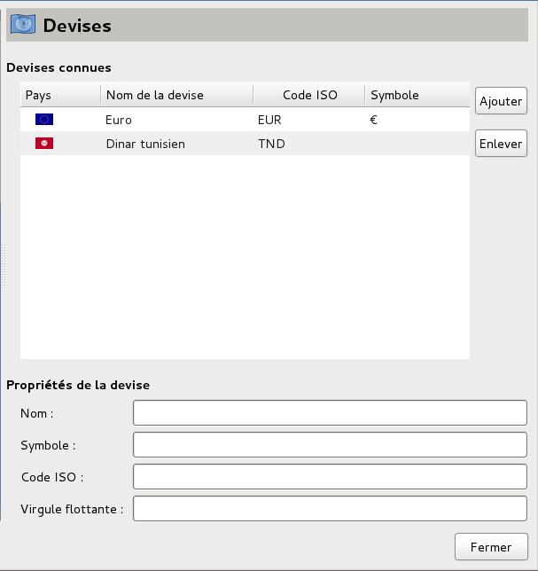
Figure 22.18: Configuration des devises
Cela permet d’ajouter ou de supprimer des devises, de définir leurs nom, symbole et code ISO, ainsi que le nombre de chiffres après la virgule nécessaires. Par exemple, si votre système le permet, vous pouvez saisir <AltGr><e> pour le symbole de l’euro.
Pour ajouter une devise, procédez comme suit :
Pour modifier une devise, sélectionnez-la et modifiez-en ses détails.
Pour supprimer une devise, cliquez sur le bouton Enlever ; si vous essayez de supprimer une devise utilisée dans un de vos comptes, Grisbi refusera.
Ce tableau liste les devises que votre fichier de comptes connaît et donne leurs taux de change, ainsi que d’autres détails.
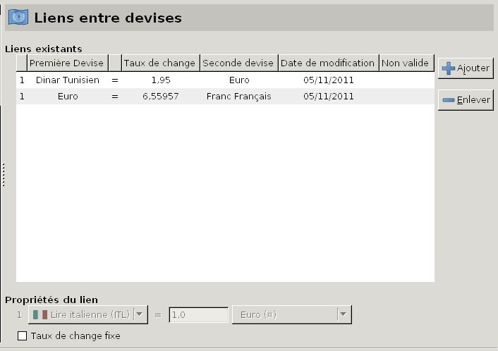
Figure 22.19: Configuration des taux de change
Pour ajouter un lien entre deux devises, procédez comme suit :
Pour supprimer un lien, cliquez sur le bouton Enlever ; si vous essayez de supprimer un lien d’une devise utilisée dans un de vos comptes, Grisbi refusera.
Cet onglet liste les banques que vous avez entrées dans votre fichier de comptes, ainsi que tous leurs détails.

Figure 22.20: Configuration des établissements financiers
Le tableau Banques connues affiche la liste de ces banques. En sélectionnant une banque par un clic sur sa ligne, les sections Détails de la banque, Correspondant et Remarques affichent tous les détails sur la banque que vous avez déjà entrés dans Grisbi.
Pour ajouter une banque, procédez comme suit :
Pour modifier une banque, sélectionnez-la et modifiez-en ses détails.
Pour supprimer une banque, sélectionnez-la, cliquez sur le bouton Enlever, puis validez dans la fenêtre de confirmation.
Attention : cette suppression est irréversible.
Cet onglet permet de créer de nouveaux exercices, et de modifier ou supprimer des exercices existants.

Figure 22.21: Configuration des exercices
Le tableau Exercices définis affiche la liste des exercices déjà définis dans votre fichier de comptes.
Pour ajouter un exercice, procédez comme suit :
Note : les exercices ne doivent pas se chevaucher ; si c’est le cas, Grisbi affiche un message d’alerte en rouge .
Pour modifier un exercice, sélectionnez-le et modifiez-en ses détails.
Pour supprimer un exercice, sélectionnez-le, cliquez sur le bouton Enlever, puis validez la fenêtre de confirmation.
Note : cette suppression ne fait que supprimer l’exercice dans le tableau Exercices définis, ainsi que le champ Exercice dans le formulaire de saisie des opérations et dans toutes les opérations qui y sont associées. Mais en aucun cas elle ne supprime les opérations elles-mêmes…
Le bouton Associer les opérations sans exercice permet d’attribuer automatiquement un exercice à toutes les opérations qui en sont dépourvues, en fonction de leur date d’opération (ou de leur date de valeur). C’est aussi le bouton magique dans le cas d’un fichier importé d’une ancienne version (ou au format QIF) ; si vous validez la fenêtre qui s’affiche ensuite, Grisbi affiche le nombre d’opérations qui ont été associées à l’exercice concerné.
La zone Détails sur l’exercice affiche les paramètres de l’exercice sélectionné dans le tableau Exercices définis.
La case Activer les exercices dans le formulaire de saisie d’opérations permet d’activer l’affichage des exercices dans ce formulaire, et ainsi d’entrer un exercice lors de la saisie des opérations. Si cela n’est pas le cas, vous devrez le faire manuellement dans le menu Édition - Préférences (voir la section 22.4.1, Contenu et éventuellement la section 8.2.2, Champs d’information et de saisie).
Vous pouvez aussi désactiver l’affichage des exercices en décochant la case Activez les exercices dans le formulaire de saisie d’opérations. S’il est désactivé, et si vous rappelez, dans le formulaire de saisie des opérations, une opération dont l’exercice n’est plus affiché, la mention Automatique apparaîtra à la place du libellé de l’exercice.
Cet onglet permet de configurer, compte par compte, les différents modes de règlement disponibles dans Grisbi, et apparaissant donc dans la liste déroulante du formulaire de saisie des opérations.
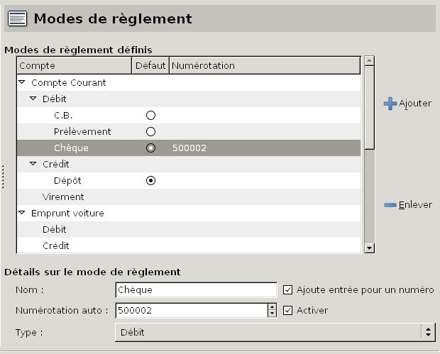
Figure 22.22: Configuration des modes de règlement
Ce tableau affiche la liste de tous vos comptes dans l’ordre où ils sont affichés dans le panneau de navigation (et non celui où ils ont été créés), précédés d’un petit triangle. Un clic sur ce triangle déroule ou enroule la liste des modes de règlement disponibles pour le compte concerné.
Note : ces triangles peuvent être remplacés, en fonction du thème de l’environnement de bureau ou du gestionnaire de fenêtres que vous utilisez, par d’autres caractères tels que +, -, >, <, etc.
Ces modes de règlement sont les suivants :
De même, un autre clic sur le triangle devant le type Débit déroule ou enroule la liste des modes de règlement disponibles :
Pour le type Crédit, le seul mode de règlement disponible est Dépôt.
Pour ajouter un nouveau mode de règlement, procédez comme suit :
Pour modifier un mode de règlement, sélectionnez-le et modifiez-en les détails.
Pour supprimer un mode de règlement, sélectionnez-le, cliquez sur le bouton Enlever, puis validez dans la fenêtre de confirmation.
Cet onglet permet de configurer les différents paramètres des budgets prévisionnels pour les différents comptes de votre fichier de comptes.
Cet onglet permet de définir les paramètres généraux pour l’ensemble de vos budgets.
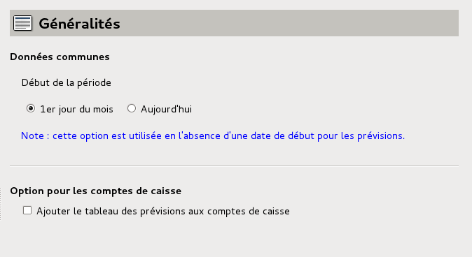
Figure 22.23: Configuration générale des budgets prévisionnels
Pour le configurer, choisissez le Début de la période servant de référence pour établir les prévisions, en cliquant sur l’un des deux boutons dans la zone Données communes : soit le 1er jour du mois (c’est le choix par défaut), soit Aujourd’hui.
Note : ce choix n’est utilisé qu’en l’absence d’une date de début renseignée dans l’onglet Prévisions du compte concerné (voir la section 17.2.2, En-tête des prévisions).
De plus, choisissez si les comptes de caisse pourront aussi avoir leur tableau de prévisions, en cochant la case Ajouter le tableau des prévisions aux comptes de caisse.
Cet onglet permet de valider la fonctionnalité de budget prévisionnel et d’en configurer les paramètres, pour chacun des comptes à budgétiser.
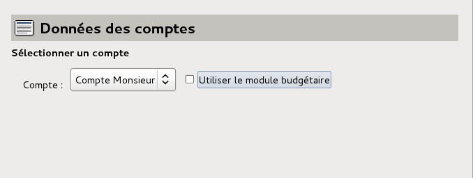
Figure 22.24: Configuration des budgets : choix des comptes
La zone Sélectionner un compte affiche :
Plusieurs comptes peuvent ainsi faire l’objet de prévisions, indépendamment et simultanément.
Pour configurer le module budgétaire pour un compte, sélectionnez ce compte dans la liste déroulante, puis cochez la case Utiliser le module budgétaire. Une autre case à cocher de libellé Compte avec carte à débit différé s’affiche en-dessous ; suivant le type de compte concerné et si vous cochez ou non cette case, le contenu du bas de la fenêtre est différent ; il y a plusieurs cas :
Pour ces comptes, une case à cocher et une seule zone supplémentaire s’affichent :
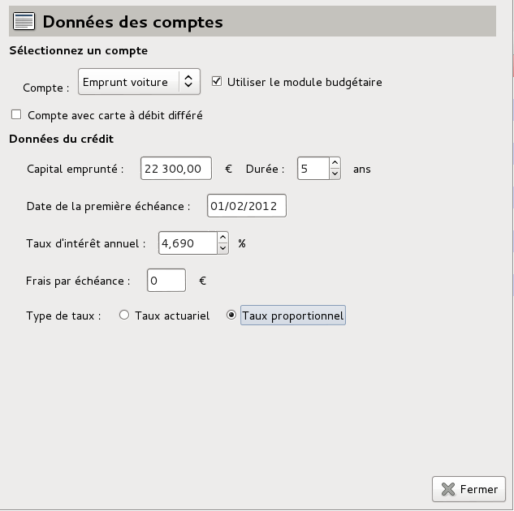
Figure 22.25: Configuration d’un budget pour un compte de passif
De plus, dans le pavé des détails du compte concerné, un nouvel onglet Tableau d’amortissement s’est ajouté entre les deux autres onglets Opérations et Propriétés.
Pour configurer les prévisions de ce compte, procédez comme suit :
Pour ces comptes, une case à cocher et deux zones supplémentaires s’affichent :
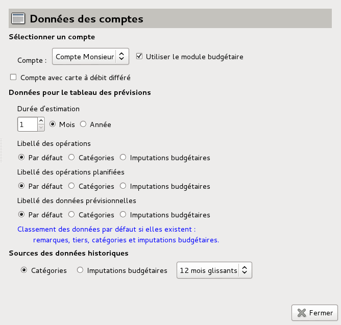
Figure 22.26: Configuration d’un budget pour un compte de banque ou de caisse avec prévisions
De plus, dans le pavé des détails du compte concerné, deux nouveaux onglets Prévisions et Données historiques se sont ajoutés entre les deux autres onglets Opérations et Propriétés.
Pour configurer les prévisions de ce compte, procédez comme suit :
Pour les comptes de caisse, deux cas se présentent, suivant l’état de la case à cocher Ajouter le tableau des prévisions aux comptes de caisse (voir la section 22.6.1, Généralités) :
si vous n’avez pas coché la case Ajouter le tableau des prévisions aux comptes de caisse, une case à cocher et deux zones supplémentaires s’affichent :
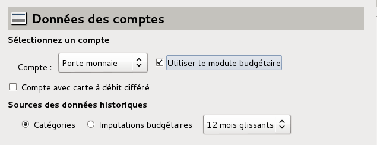
Figure 22.27: Configuration d’un budget pour un compte de caisse sans prévisions
De plus, dans le pavé des détails du compte concerné, un seul nouvel onglet Données historiques s’est ajouté entre les deux autres onglets Opérations et Propriétés ;
Pour configurer les prévisions de ce compte, procédez comme suit :
si vous avez coché la case Ajouter le tableau des prévisions aux comptes de caisse, une case à cocher et deux zones supplémentaires s’affichent :
De plus, dans le pavé des détails du compte concerné, deux nouveaux onglets Prévisions et Données historiques se sont ajoutés entre les deux autres onglets Opérations et Propriétés.
La configuration des prévisions de ce compte se fait de la même manière que pour les comptes bancaires (voir le paragraphe 22.6.2, Type compte bancaire).
Pour ces comptes, la fenêtre de configuration est la même que pour un compte de caisse, elle se configure de la même manière, et le pavé des détails affiche les mêmes onglets (voir le paragraphe 22.6.2 Type compte de caisse, Sans prévisions).
Pour ces comptes, la fenêtre de configuration est la même que pour un compte bancaire, elle se configure de la même manière, et le pavé des détails affiche les mêmes onglets (voir le paragraphe 22.6.2, Type compte bancaire).
Cette possibilité permet d’établir des prévisions sur ce type de compte auquel pourrait être dédiée une carte bancaire, qui pourrait être par exemple un porte-monnaie électronique à débit différé, si cela existe, ou toute autre utilisation dont vous pourriez avoir besoin.
Pour les comptes de caisse, deux cas se présentent, suivant l’état de la case à cocher Ajouter le tableau des prévisions aux comptes de caisse (voir la section 22.6.1, Généralités) :
si vous n’avez pas coché la case Ajouter le tableau des prévisions aux comptes de caisse, la fenêtre de configuration est la même que pour un compte de caisse sans prévisions, elle se configure de la même manière, et le pavé des détails affiche les mêmes onglets (voir le paragraphe 22.6.2, Type compte de caisse, Sans prévisions).
si vous avez coché la case Ajouter le tableau des prévisions aux comptes de caisse, la fenêtre de configuration est la même que pour un compte bancaire, elle se configure de la même manière, et le pavé des détails affiche les mêmes onglets (voir le paragraphe 22.6.2, Type compte bancaire).
Il n’y a pas de module budgétaire pour un compte d’actif, on ne peut donc pas le valider.